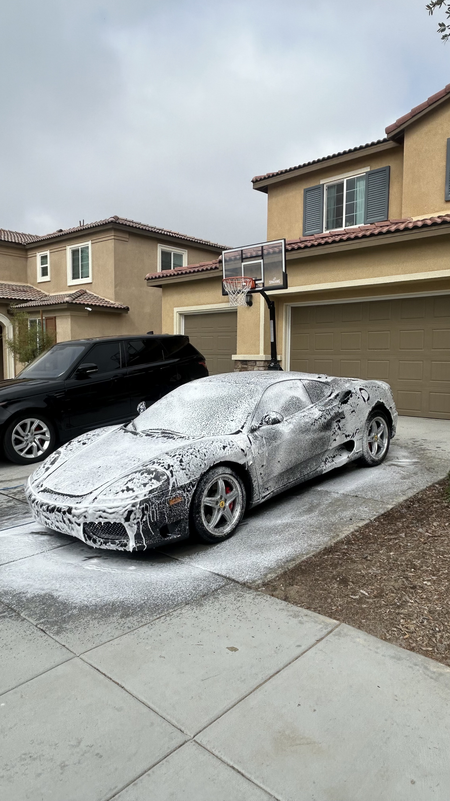
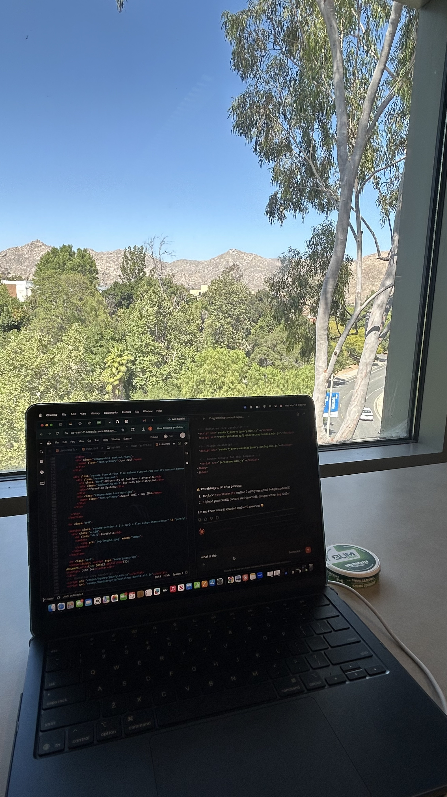
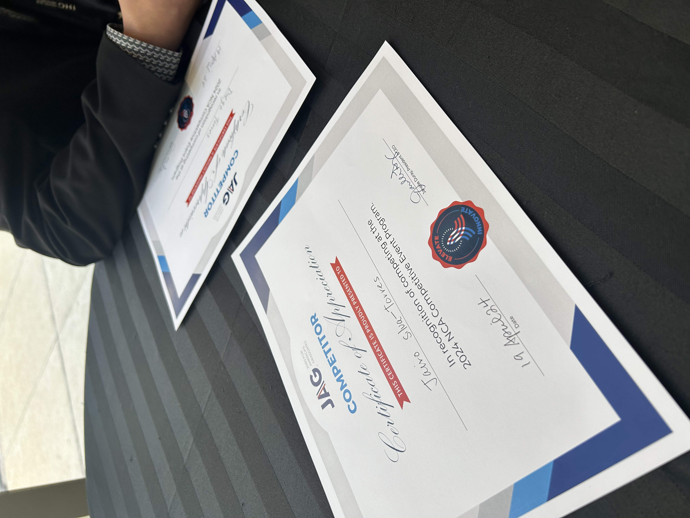

Jairo Silva Torres
My name is Jairo Silva Torres and I am a first-year Business Administration student at the University of California, Riverside. I am passionate about finance, entrepreneurship, and giving back to my community. I bring a unique combination of academic dedication, real-world work experience, and leadership that sets me apart as a driven and motivated individual.
I currently serve as an intern for the Highlander Student Investment Fund (HSIF), where I gain hands-on experience in investment analysis and portfolio management. I am also an active member of the Highlander Financial Group (HFG) and UCRAPLFA, a professional development club dedicated to supporting Latino students at UCR. These experiences have deepened my understanding of finance and strengthened my professional network.
Beyond academics, I am an entrepreneur. I run my own mobile detailing business, where I manage all operations including client acquisition, scheduling, and finances. This experience has taught me the value of hard work, customer service, and running a business from the ground up. I also work at Applebee's, where I have developed strong communication and teamwork skills in a fast-paced environment.
In high school, I was heavily involved in leadership and community service. I served as Vice President of Civil Awareness and President of Business Administration for JAG (Jobs for American Graduates) for two years, where I competed and held key leadership roles. I was also Treasurer of Students for Change, a club focused on volunteering and community impact. These roles shaped my leadership style and commitment to making a difference.
As an athlete, I wrestled at the varsity level for two years and played JV soccer for one year, which instilled in me discipline, resilience, and the importance of being a team player. I am eager to continue growing professionally and academically at UC Riverside, and I look forward to making meaningful contributions both on campus and in my community.
Experience
Owner & Operator
• Manage all business operations including scheduling, client relations, and finances
• Perform professional detailing services for residential and commercial clients
• Grew client base through word of mouth and social media marketing
Server
• Provided excellent customer service in a high-volume restaurant environment
• Collaborated with team members to ensure smooth daily operations
• Developed strong communication and problem-solving skills
Investment Intern
• Assist in analyzing investment opportunities and managing a student-run portfolio
• Conduct market research and present findings to the investment committee
• Develop skills in financial modeling and equity research
President & VP of Civil Awareness
• Served as President of Business Administration and VP of Civil Awareness for two years
• Competed in regional and state JAG competitions
• Led meetings, organized events, and mentored fellow members
Treasurer
• Managed club finances and budgeting for community events
• Organized volunteer and community outreach initiatives
• Contributed to projects focused on social awareness and civic engagement
Education
UC Riverside
Portfolio


